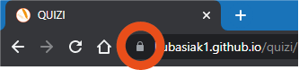
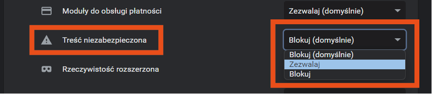

PRZEJDŹ DO STRONY GŁÓWNEJ
w kilku krokach możesz rozwiązać problem
najedź kursorem na ikonę kłódki znajdującej się po lewej stronie paska adresu, a następnie kliknij na nią

najedź kursorem oraz kliknij na ustawienia witryny
Wyszukaj opcji "Treści niezabezpieczone" a następnie zmień opcję "blokuj" na "zezwalaj"

teraz radio powinno odtwarzać się w prawidłowy sposób